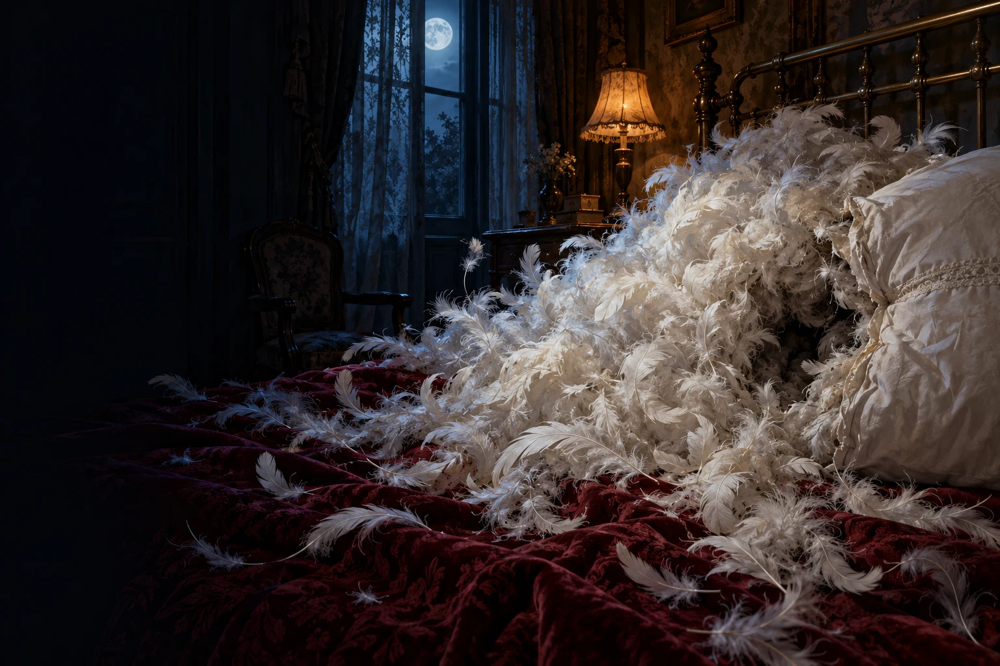
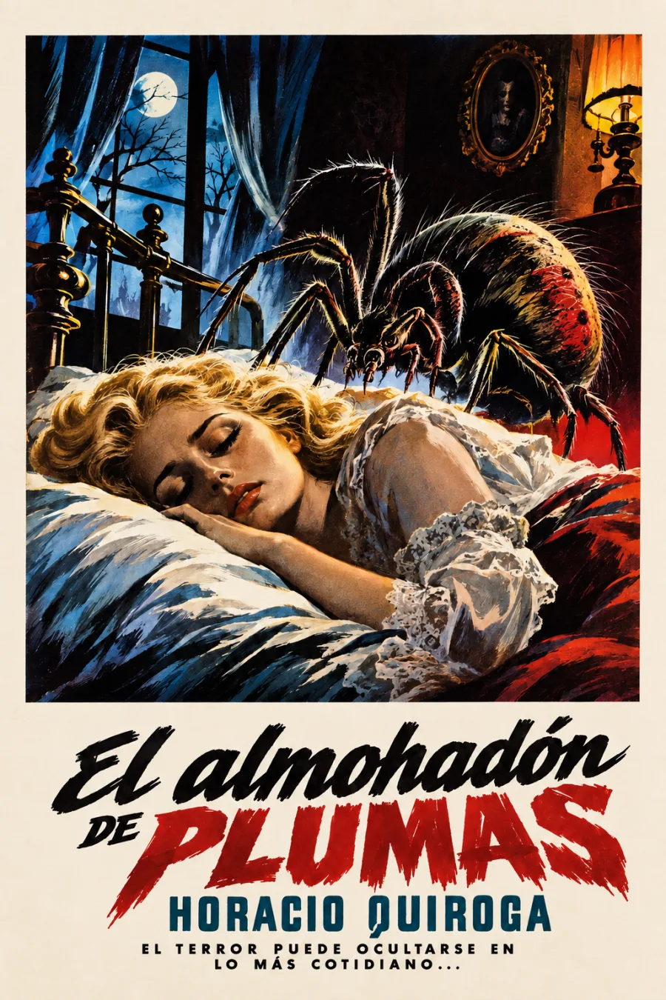

Audiolibros · Cuarta Ola
El almohadón
de plumas
Horacio Quiroga · Publicación: 1907
En Cuentos de amor de locura y de muerte · 1917
Lo más íntimo puede guardar el horror.
La blancura de una casa. El silencio de una cama.
Una presencia que crece donde
debería comenzar el descanso.
Escena de terror: criatura en movimiento y salto hacia la pantalla. Sin sonido. Se reproduce una vez; puedes detenerla.
Preparando la escena…
El silencio tiene un huésped.
Grabación próximamente
Volumen

La casa que no protege
El frío precede al monstruo. La severidad de Jordán y la blancura hostil de la casa rodean a Alicia antes de que su enfermedad se vuelva inexplicable. Quiroga dispone el dormitorio como un lugar de vigilancia e impotencia: los médicos observan, el marido camina y el deterioro continúa.
El refugio cotidiano se convierte en amenaza.
La revelación obliga a mirar de nuevo el objeto más cercano al cuerpo. Después, el narrador adopta un tono explicativo que presenta lo monstruoso como si fuera un hecho natural. Proponemos leer esa seguridad final como un recurso del horror: una afirmación de apariencia científica dentro de la ficción, no una descripción zoológica fiable.
Publicado en Caras y Caretas, julio de 1907: Biblioteca Nacional de Uruguay · testimonio de la publicación. Recogido en Cuentos de amor de locura y de muerte (1917): texto consultado · Ciudad Seva. El parásito tridimensional de esta página es una invención artística: cuerpo gris e hinchado, dieciséis patas cortas y pinzas articuladas. No representa una especie real ni una acción literal del cuento.
La lectura
Cuento completo
Una lectura continua. Grabación pendiente de incorporación. La escena visual funciona de forma independiente y puede detenerse sin afectar al reproductor.
Mi valoración

5/5 · Me encanta este cuento.